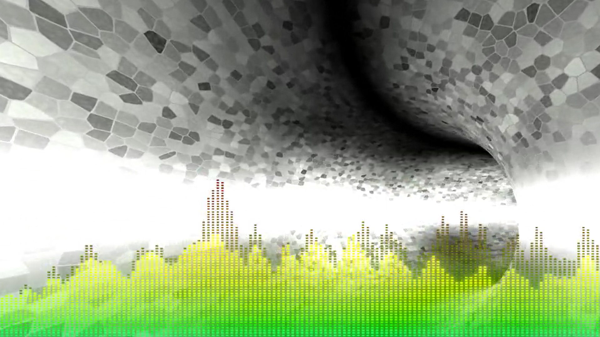
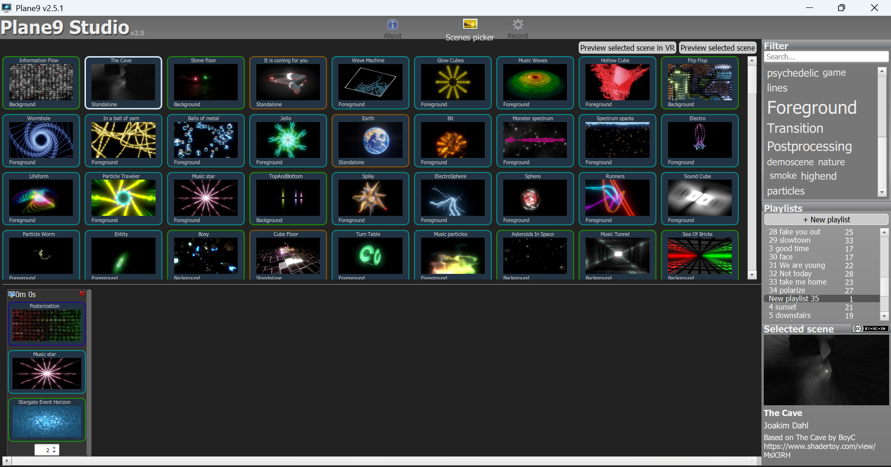

Introduction à Plane9
Présentation
Plane9 est un visualiseur 3D qui permet de synchroniser des scènes visuelles à de la musique choisie (un exemple
ici).

Installation
Plane9 est un logiciel pour Windows.
- Téléchargez Plane9 depuis le site officiel et installez-le sur votre ordinateur.
- Installez x264 vfw depuis ce site.
- Téléchargez ffmpeg depuis ce site (ffmpeg-git-essentials.7z) ; extrayez ffmpeg.exe du dossier bin et placez-le dans un dossier sur votre ordinateur.
Utilisation
Ouvrez Plane9 Studio (Programmes (x86)).
- Cliquez sur "New playlist" ; si vous voulez la renommer double-cliquez dessus (puis faites Entrée).
- Faites glisser des scènes vers le bas en les ajoutant une à une. Certaines scènes peuvent se superposer, c'est le cas des scènes Foreground, Background et Postprocessing par exemple. Entre deux scènes vous pouvez placer une scène de transition.

- Pour avoir un aperçu d'une scène, double-cliquez dessus (puis pour en sortir bougez la souris)
- En dessous des scènes réglez la durée souhaitée (par défaut 2 secondes).
- Une fois vos scènes agencées, cliquez sur Record. Dans le premier champ cliquez sur Browse pour sélectionner votre musique (au format mp3). Puis dans le champ "Video output file" cliquez sur Browse pour déterminer où sera enregistrée la vidéo produite et son nom. Dans le champ suivant ("Location of ffmpeg"), retrouvez ffmpeg.exe là où vous l'avez mis précédemment. Enfin, cliquez sur "Record preview video" (ou sur "Record Video" pour la version finale) pour commencer à synchroniser la musique et les scènes. Une fenêtre blanche apparait avec la durée d'attente restante dans son titre.
- Une fois la synchronisation terminée, la fenêtre se ferme automatiquement et vous pouvez cliquer sur "View recorded video".